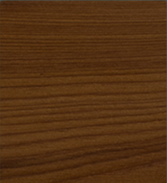
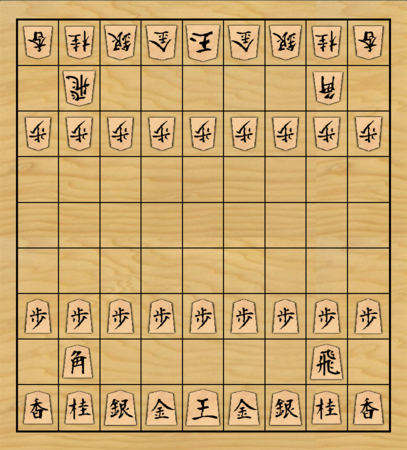
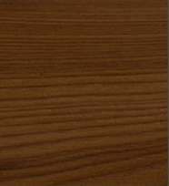

C 計器に寄せる
1. 主画面（盤・棋譜・検討）
F☗先手番0手目棋譜表示中

☖ 持ち駒なし

☗ 持ち駒なし

手数 0/9
- 開始局面
- 1☗2六歩
- 2☖8四歩
- 3☗2五歩
- 4☖8五歩
- 5☗7八金
| 指し手 | 評価値 | 読み筋 |
|---|---|---|
| ☗7六歩 | +101 | ☗7六歩 ☖3四歩 ☗2六歩 ☖8四歩 ☗2五歩 ☖8五歩 ☗7八金 ☖3二金 |
| ☗2六歩 | +65 | ☗2六歩 ☖3四歩 ☗7六歩 ☖4四歩 ☗4八銀 ☖3二銀 |
| ☗7八金 | +60 | ☗7八金 ☖3四歩 ☗7六歩 ☖8四歩 ☗6八銀 |
| ☗5六歩 | +43 | ☗5六歩 ☖3四歩 ☗7六歩 ☖8四歩 |
深さ 21 ノード数 15.7M NPS 3.0M 時間 5.2s
2. プリセット編集
Hao
保存時にプリセットが更新され、必要なら自動でエンジンが再起動されます。
engines/YaneuraOu_NNUE_halfkp_256x2_32-V900Git_APPLEM1
数値を入力してください
3. 課題局面
課題局面
1件を保存できませんでした。ファイルの場所を確認してください。（読み取り専用）
- 先手振飛車穴熊に対する4四銀型研究中2026-09-01
- 矢倉早囲い対急戦の成立未整理2026-09-03
- 相掛かり▲3七銀型の手順完了2026-09-11